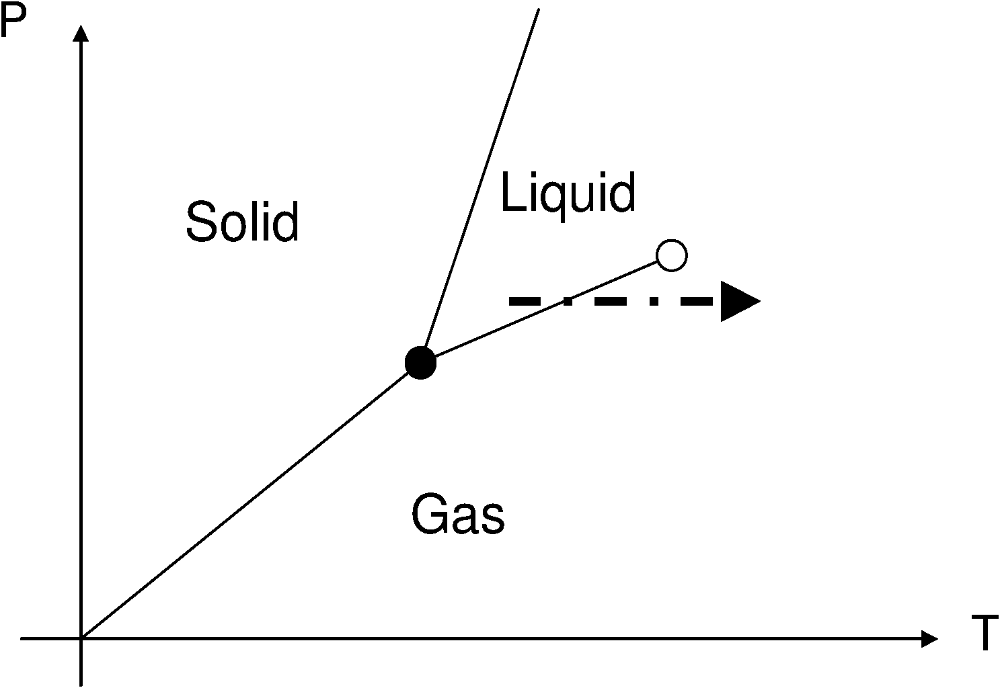
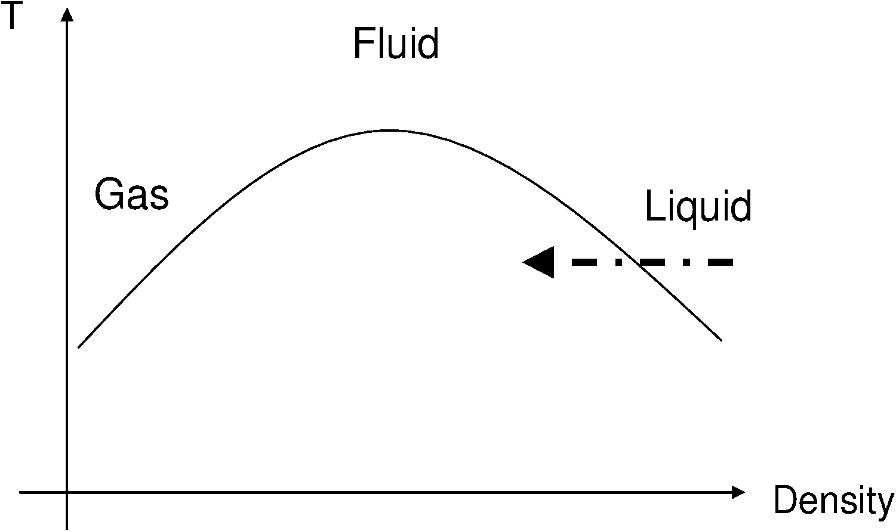
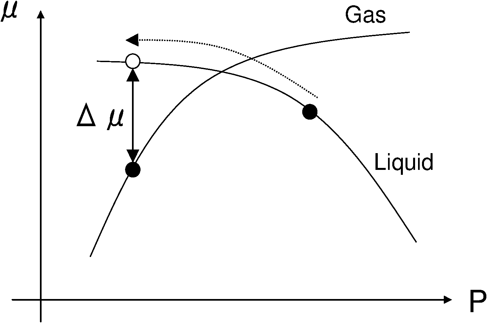
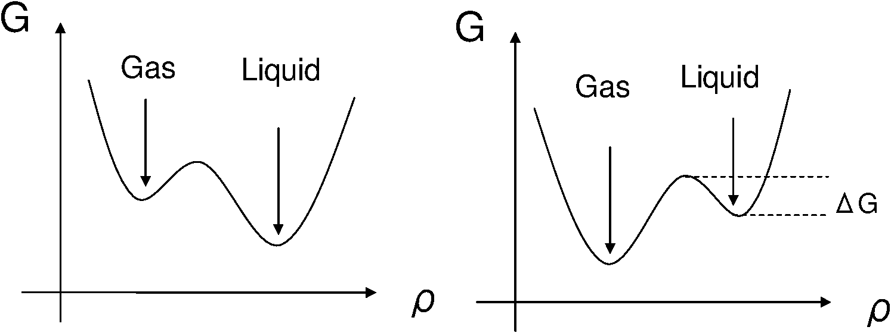
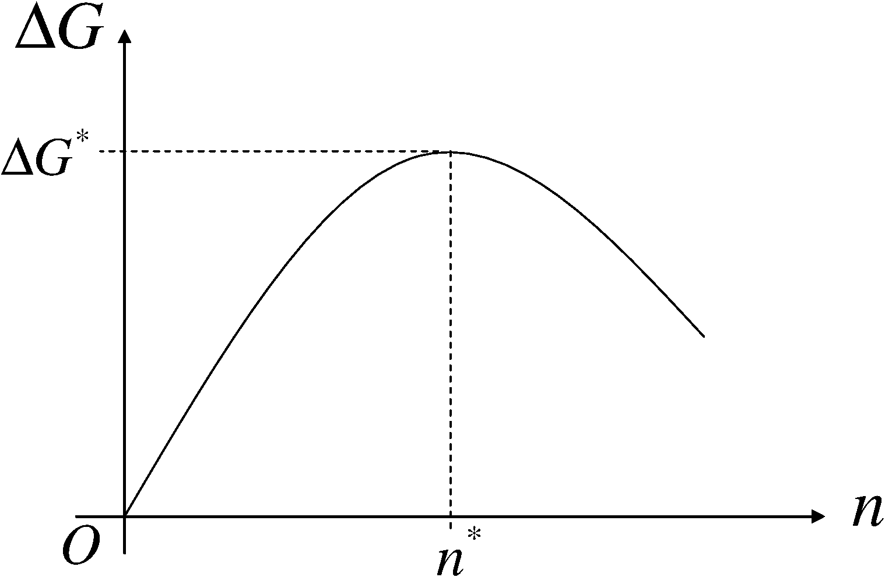
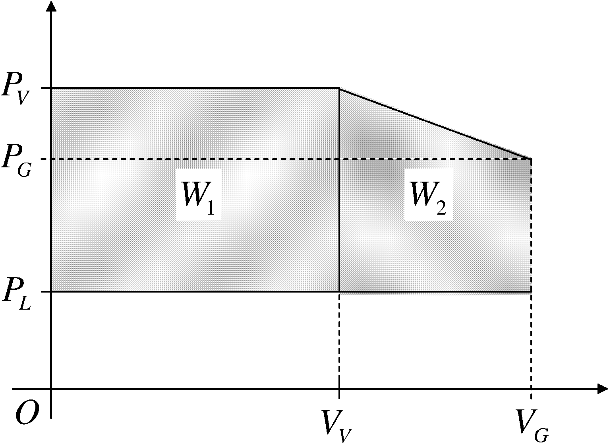

1 沸騰とは
ある温度や圧力において、液相単相の平衡状態が実現されているとする。 これを、定圧条件で温度を上げる、定積条件で密度を下げるなどの操作を行い、 気液共存線を横切ると液相は準安定状態となり、気泡核生成が起きる。 その後、定圧条件では最終的に気相単相が、定積条件では気液共存状態が実現される(図[fig_boil])。


一般に温度を上げることにより起きる発泡現象を沸騰(boiling)、 減圧により生じる発泡現象をキャビテーション(cavitaion)と呼び、区別される。 シミュレーションによる実現が簡単なのは、定積条件において急減圧することである。 これはある瞬間に粒子の半径を減少させることで実現する。これは密度を下げることに 対応するが、物理的には急減圧を行っていることと等しい。急減圧を行った直後、 液体は準安定状態となり、化学ポテンシャルは同じ温度、同じ密度における気体よりも 高くなる(図1)。しかし、液相から気相にいたるにはエネルギーバリア\(\Delta G\)があり、 すぐに気泡は発生できない(図2)。こういった準安定状態からの核生成を扱う理論が 古典核生成論(Classical Nucleation Theory)、略してCNTである。

2 古典核生成論
準安定状態からの緩和の理論は、1870年代後半にGibbsらによってはじまったが、 現在、いわゆる古典核生成論と呼ばれるものは、1900年代前半に FarkasやZeldovichらによってまとめられたものである。 その後、様々な修正を受けたが、その本質はあまり変わっていないように見える。 そこで、まずZeldovichの理論をフォローする。計算の表式をやや現代的に改めたが、 内容はほぼ参考文献[1]による。 なお、以下は過飽和蒸気における「液滴生成」の理論であることに注意したい。 気泡生成への適用は後述する。

過飽和蒸気について考える。過飽和蒸気とは、本来その温度における平衡圧力\(P_0\)に比べて 高い圧力\(P\)を持つ蒸気のことで、放置しておくと液滴を生成することで圧力を下げようとする。 ある時刻\(t\)において、内部に\(n\)個の粒子を含む液滴クラスターの単位体積あたりの数(クラスター濃度)を\(c(n,t)\)としよう。 さらに\(n\)個の粒子を含む液滴が、単位時間あたりに粒子を一つ獲得する確率を \(W_+(n)\)、一つ放出する確率を\(W_-(n)\)とする。 いま、過飽和度が低いとして、粒子の放出および獲得は一つずつしか行われないと仮定すると、 \(c(n,t)\)についてのマスター方程式は \[\frac{\partial c}{\partial t} = - \left[ W_+(n) + W_-(n) \right] c(n,t) + W_+(n-1) c(n-1,t) + W_-(n+1) c(n+1,t)\] と書ける。 ここで、平衡状態におけるクラスター濃度を\(c_0(n)\)とすると、 詳細釣合の条件から、 \[W_+ c_0(n) = W_- c_0(n+1)\] が成立する。ここから\(W_-\)を消去して、 \[\frac{\partial c}{\partial t} = W_+(n) c_0(n) \left\{ \frac{c(n+1)}{c_0(n+1)} - \frac{c(n)}{c_0(n)} \right\} - W_+(n-1) c_0(n-1) \left\{ \frac{c(n)}{c_0(n)} - \frac{c(n-1)}{c_0(n-1)} \right\}\] が得られ、さらに\(n\)に関して連続近似すれば、 \[\frac{\partial c}{\partial t} = \frac{\partial }{\partial n} \left(W_+ c_0 \frac{\partial c/c_0}{\partial n} \right) \] を得る。ここで、\(n\)に関する流れ場(flux)を\(J(n)\)とすれば、 連続の式は \[\frac{\partial c}{\partial t} = -\frac{\partial J}{\partial n} \] と定義される。式([eq_continuum])および([eq_contiuum2])を見比べれば、 流れ場\(J(n)\)は \[J(n) =-\left(W_+ c_0 \frac{\partial c/c_0}{\partial n} \right)\] で与えられることがわかる。 また、式([eq_continuum])は、 \[\frac{\partial c}{\partial t} = - \frac{\partial}{\partial n} \left( \displaystyle \frac{W_+}{c_0} \frac{\partial c_0}{\partial n} - W_+ \frac{\partial}{\partial n} \right) c\] と書くこともできる1。 これは、力の場 \[f = \frac{W_+}{c_0} \frac{\partial c_0}{\partial n} = W_+ \frac{\partial \ln c_0}{\partial n} \] におけるランダムウォークの式と等価である。
ここで、平衡状態のクラスター濃度\(c_0\)について考える。 単独の粒子を基準とし、そこから\(n\)個の粒子を含むクラスターを作るためのGibbs自由エネルギーを \(\Delta G(n)\)としよう。このとき、平衡状態の濃度は \[c_0(n) = c_0(1) \exp \left( -\beta \Delta G \right) \] となるであろう。ただし\(c_0(1)\)とはモノマーの密度、すなわち 過飽和蒸気濃度に他ならない。この濃度の式([eq_c0])を力の場の式([eq_f])に代入すれば、 \[f = - W_+ \beta \frac{\partial \Delta G}{\partial n}\] を得る。すなわち、クラスターサイズの時間発展は、 Gibbsの自由エネルギーをポテンシャルとする中での ランダムウォークであると解釈できる2。
一般に、\(n\)個の粒子を含むクラスターを作るためのエネルギー\(\Delta G\)は、 ある大きさ\(n^*\)で最大値を\(\Delta G^*\)とる(図3)。 クラスターは\(\Delta G\)をポテンシャルとするランダムウォークをするのであるから、 \(n^*\)よりも小さなクラスターはより小さく、 大きなクラスターはより大きくなろうとする。 このサイズが臨界核サイズ(Critical Nucleation Size)と呼ばれ、 その大きさを見積もるのがCNTの目的である。

3 核生成率
過飽和蒸気において、その過飽和度を維持していれば、臨界核サイズよりも 大きなクラスターは無限に成長を続ける。したがってクラスターサイズに 平衡状態は存在しない。我々が興味のある量は、臨界核サイズに達する クラスターの生成速度である。これを核生成率(Nulceation Rate)\(J_s\)と呼ぼう。 以下、核生成率を求める。
クラスター濃度に関する連続の式([eq_continuum])からはじめよう。 定常状態であれば、\(\partial c/\partial t = 0\)であるから、 定常流れを\(J_s\)とすると、 \[J_s = - W_+ (n) c_0(n) \frac{\mathrm d}{\mathrm dn}\left( \frac{c_s(n)}{c_0(n)} \right)= \mbox{const.}\] となる。ただし\(c_s(n)\)は定常密度であり、時間に依存しないため\(n\)に関する全微分となる3。 これは変数分離型になっており、積分が可能である。 \(W_+ c_0\)を移項すると \[-\frac{J_s}{W_+(n) c_0(n)} = \frac{\mathrm d}{\mathrm dn } \left(\frac{c_s(n)}{c_0(n)} \right)\] 両辺を\(n\)で\((1,\infty)\)の区間で積分すれば、 \[-J_s \int_1^{\infty} \frac{\mathrm dn}{W_+(n) c_0(n)} = \left[ \frac{c_s(n)}{c_0(n)} \right]_1^\infty\] \(c_s(1)\)、すなわち過飽和蒸気の定常密度はほぼ平衡密度\(c_0(1)\)に等しいであろう。 また、\(n \rightarrow \infty\) の極限で\(c_s/c_0 \rightarrow 0\)となるであろう。 したがって右辺の値は\(-1\)となり、\(J_s\)について解くと、 \[J_s = \left[ \int_1^\infty \frac{\mathrm dn}{W_+(n) c_0(n)} \right]^{-1} \] を得る。\(c_0\)は\(n=n^*\)において最小値\(c_0(n^*)\)を取り、そのピークは非常に鋭いため、 積分に寄与するのは\(n=n^*\)のまわりのみである。 そこで、\(n=n^*\)のまわりの鞍点近似によって積分を評価する。 \(c_0(n)\)を\(n^*\)のまわりで二次まで展開すると、 \[c_0(n) = c(1) \exp\left[ - \beta \Delta G^* -\frac{\beta}{2} \left( \frac{\partial^2 \Delta G}{\partial n^2} \right)_{n=n^*} (n-n^*)^2 \right]\] これを式([eq_Js])に代入すれば、ガウス積分により積分が評価できて、最終的に \[J_s = Z W_+(n^*) c_0(n^*)\] を得る4。ただし、\(Z\)はZeldovich定数 \[Z = \left[- \frac{\beta}{2\pi} \left( \frac{\partial^2 \Delta G}{\partial n^2} \right)_{n=n^*} \right]^{1/2}\] である。\(\Delta G\)は上に凸な関数であるから、一般に\(Z>0\)である。
\(W_+(n^*) c_0(n^*)\)は、平衡状態における臨界クラスターサイズの 液滴の成長速度である。液滴生成率\(J_s\)は、それにZeldovich定数をかけた形になっている。 したがって、Zeldovich定数は、非平衡度を表すパラメータであると解釈できる。
なお、Kinetic Theory によれば、\(W_+\)は \[W_+(n) = A(n) \frac{P \beta^{1/2}}{\sqrt{2\pi m}}\] と見積もることができる。ただし\(A(n)\)は\(n\)粒子クラスターの面積、\(P\)は 過飽和蒸気圧である。
4 ギブスエネルギーの評価
核生成率\(J_s\)は、臨界核サイズ\(n^*\)と、そのサイズにおけるGibbs自由エネルギー\(\Delta G^*\)、 その周りでの二次の微分係数によって評価される。 \(n^*\)のもっとも簡単な見積もりは、気相と液相の化学ポテンシャル差\(\Delta \mu\)と、 界面張力\(\gamma\)を用いて \[\Delta G^* = \gamma A(n) - n \Delta \mu\] と見積もるものである(Gibbsの近似)。 ただし\(A(n)\)は\(n\)粒子クラスターの表面積である。 この表式ではクラスターの並進運動および回転の自由度を無視している。 これらの自由度も考慮すると、 \[\Delta G = \gamma A(n) - n \Delta \mu -k_B T \ln \frac{n^{3/2}}{\lambda^3} - k_B T \ln \frac{a v_b n^{5/2}}{\lambda^3}\] となる。ただし\(\lambda = h/\sqrt{2 \pi m k_B T}\)はド・ブロイ波長であり、 \(a\)は幾何学因子(球なら4.76)、\(v_b\)は粒子の排除体積である。 ただ、並進および回転の寄与は、液滴の場合には無視できないが、気泡の場合にはあまり重要ではないと思われる。 また、界面張力\(\gamma\)を、界面が平坦な場合の界面張力\(\gamma_\infty\)を用いて 近似することをcapillarity approximationと言う。
5 気泡生成
液滴生成と気泡生成の大きな違いは、気泡生成の際に気泡がまわりの液体に仕事を することである。その仕事の分だけ気泡生成に必要な仕事は減るため、結果として 液滴生成よりも生成率が高くなる。以下、その仕事を見積もる[2]。
準安定状態にある液体(圧力\(P_L\))において、体積\(V_G\)、面積\(A\)の 気泡を作る最小仕事\(W\)を考える。 まず、同じ大きさの空洞を作るためには、界面を作るための仕事\(\gamma A\)が必要となる。 しかし、実際には気泡が膨張する際に仕事をするため、必要な最小仕事\(W\)は\(\gamma A\)よりも小さくなる。 気泡を作る仕事\(W\)が最小となるのは、気泡が液体にする仕事が最大となるときであり、 それは気泡生成過程が可逆過程であるときである。 そこで、気泡が液体にする最大仕事を、等圧過程、等温過程の二つのステップに分けて考える。
まず、等圧過程を考える。液体から粒子が可逆的に気化するためには、 その温度における飽和蒸気圧\(P_V\)で気化しなければならない。 圧力\(P_L\)の液体から、飽和蒸気圧\(P_V\)で体積\(V_V\)の気泡を作るための仕事\(W_1\)は \[W_1 = (P_V - P_L)V_V\] である。ここで、液体は準安定状態にあるため、飽和蒸気圧よりも液体の圧力の方が小さい(\(P_V>P_L\))。
次に、先ほど作成された気泡内部の粒子数\(n\)を保ったまま、等温過程で変化させる。 このとき、液体の圧力\(P_L\)のもとで 体積を\(V_V\)から\(V_G\)まで変化させる仕事\(W_2\)は \[\begin{aligned} W_2 &= \int_{V_V}^{V_G} (P-P_L)\mathrm dV \\ &= P_G V_G - P_V V_V - \int_{P_V}^{P_G}V \mathrm dP - P_L(V_G - V_V) \\ &= P_G V_G - P_V V_V - P_L V_G + P_L V_V - n (\mu_G - \mu_L) \end{aligned}\] ただし、化学ポテンシャル\(\mu\)と圧力\(P\)のルジャンドル変換 \(n \mathrm d\mu = V \mathrm dP\)、および飽和蒸気圧\(P_V\)にある気体の化学ポテンシャルは 液体の化学ポテンシャル\(\mu_L\)と等しいことを用いた。
最終的に、面積\(A\)、体積\(V_G\)を持つ気泡を作る仕事\(W\)として \[\begin{aligned} W &= \gamma A - W_1 - W_2\\ &= \gamma A - V_G (P_G - P_L) - V_G \rho_G (\mu_L - \mu_G) \end{aligned}\] を得る。ただし\(\rho_G\)は\(n \equiv V_G \rho_G\)で定義される気泡内の粒子数密度である。 右辺第一項が界面を作るための仕事、第二項が気泡が膨張する際にする仕事、第三項が 化学ポテンシャル差である。この仕事を気泡生成の自由エネルギー\(\Delta G\)と 同一視するのが、気泡生成の際のGibbs近似である。 式([eq_workforbubble])には気泡内の圧力\(P_G\)が含まれるが、 成長しつつある気泡内の圧力\(P_G\)は体積の関数として一意には決まらない。 そこで、一般には力学平衡 \[P_G = P_L + \frac{2\gamma}{r}\] を仮定する。ただしこれは半径\(r\)の球における界面張力と圧力の釣り合いの式、 いわゆるYoung-Laplaceの式である5。 力学平衡は化学平衡よりも早く達成されるであろうという仮定はもっともらしいが、 この仮定が実際に成り立っているかどうかのの確認は難しい。

6 まとめと古典論の問題点
以上、簡単に古典核生成論についてまとめた。古典核生成論の本質は 核生成に必要なGibbs自由エネルギー\(\Delta G\)が上に凸なシングルピークを持つ関数であることを 用いた鞍点近似にあり、\(\Delta G\)の具体的な形は必要としていない。 この\(\Delta G\)を可逆仕事から見積もるのがGibbs描像であり、 液滴の場合には界面張力と化学ポテンシャル差、気泡生成の場合にはそれに加えて 気泡が膨張する際に液体する仕事の効果を取り入れている。
Gibbs近似により気泡生成の仕事を見積もるためには、準安定状態の液体と気体の間の 界面張力を測定する必要がある。しかし、準安定状態であれば界面は安定に存在できないため、 一般にはその温度における平衡状態の界面張力の値が用いられるようである。 さらに、界面張力の曲率依存性も無視できない。界面張力の見積もりがわずかにずれても、 気泡生成率の予測値が数桁のオーダーで変化することも理論の構築を難しくしている。
数値計算による気泡生成率の評価も精力的に行われている。たとえば Lennard-Jones粒子により、気泡生成までの待ち時間から気泡生成率を求めた計算では 古典核生成論による予測から８桁ずれたという報告がある[3]。
ここで紹介した古典論では、気泡生成に必要な可逆仕事のみを考慮したが、実際には 潜熱による発熱、流体の効果、気泡間相互作用などが効いていると思われる。 これらについては古くから議論があり、様々な研究が行われているが、まだ良く分かっていないようだ。
参考文献
- J. Feder, K. C. Russel, J. Lothe, and G. M. Pound, Adv. Phys. {\bf 15}, 111 (1966).
- M. Blander and J. L. Katz, AIChE. J, 21, 833 (1975).
- T. Kinjo and M. Matsumoto, Fluid Phase Equilibria, 144 343 (1998).
式([eq_continuum])右辺の内側の微分を実行した。↩︎
これはオーバーダンプした Langevin方程式とのアナロジーから理解される。↩︎
定常流れ\(J_s\)は\(n\)依存性を持たないことに注意。式([eq_contiuum2])において、定常状態であるから 左辺はゼロとなる。すると\(J\)を\(n\)で微分するとゼロとなるから、\(J\)は\(n\)依存性を持たない。 これを\(J_s\)と定義している。↩︎
ここで、\(W_+\)はクラスターの面積\(n^{2/3}\)程度の \(n\)依存性しかないため、ほぼ定数であるとして積分の外に出した。↩︎
気泡内外の圧力差\(\Delta P = P_G - P_L\)を 界面張力 \(2\gamma /r\) で支えているというつりあいの式。↩︎